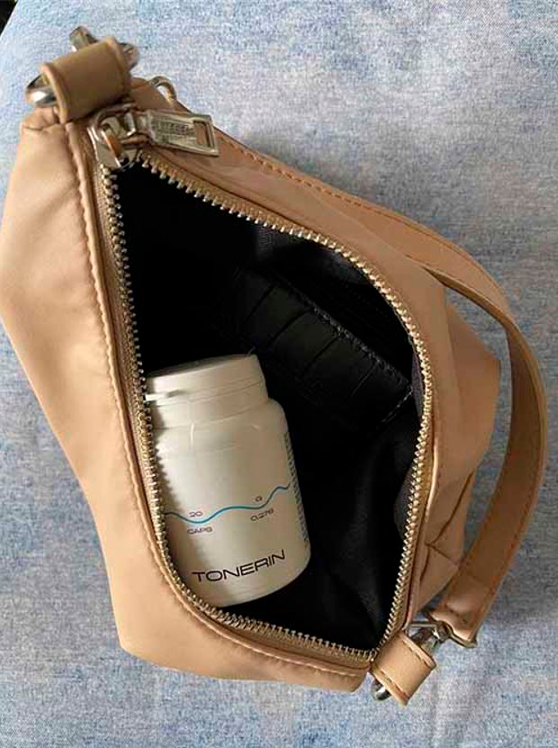
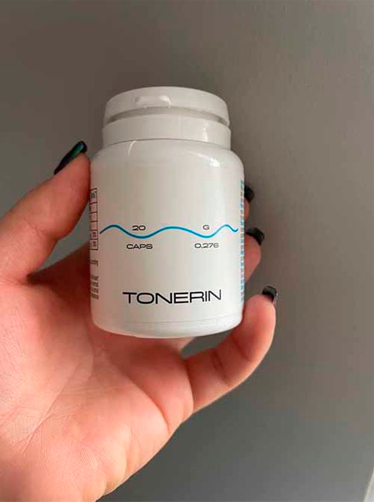

Bătrânețea nu este un obstacol în calea unei vieți lungi și sănătoase! Expertul în
vârstă de 92 de ani și-a împărtășit secretul longevității și sănătății sale minunate.
Renumitul expert în domeniul cardiologiei, multi-laureat al premiului medical, Ionescu Octavian s-a
retras la vârsta de 70 de ani. Cu toate acestea, în spirit și în corp, el rămâne tânăr și sănătos.
Expertul trăiește pe contul banilor săi de pensionare de peste 20 de ani și fondul de pensii îl urăște
practic! Bărbatul are acum 92 de ani, dar arată și se simte ca la 60 de ani.
u heeft meermaals v
E simplu. Funcționarea organelor și sistemelor organismului uman depind de calitatea circulației sângelui, care furnizează oxigen și substanțe nutritive organelor interne, precum și colectează dioxidul de carbon și produsele metabolice. În copilărie și tinerețe, ne mișcăm mai mult, vasele sunt noi, elastice și curate, iar nutriția organelor este maximă. Dar, odată cu vârsta, începem să ne mișcăm mai puțin, iar vasele noastre încep să se contamineze. Acest lucru se datorează multor factori, nu numai nocivi (cum ar fi fumatul, alimentația nesănătoasă, mediul rău și stilul de viață sedentar), ci și natural (cum ar fi depunerea lipidelor, un proces care are loc în fiecare organism).
jarige professor
Ce înseamnă să ai vase de sânge murdare? Imaginați-vă o țeavă plină de rugină. Ce se întâmplă? Presiunea apei crește, iar apa are un gust neplăcut. Același lucru se întâmplă și cu vasele de sânge: când colesterolul sau alte substanțe se așează pe ele, presiunea crește (vasele murdare sunt cauza principală a presiunii ridicate!). Sângele este umplut cu impurități, iar circulația sângelui este perturbată, ca urmare schimbări se produc în toate organele și sistemele organismului, chiar și în piele.
jarige professor
Corpul uman îmbătrânește. Dacă acordați atenție și vă curățați vasele de sânge, veți putea trăi cu cel puțin 20 de ani mai mult fără dureri în organele și articulațiile interne, iar corpul dumneavoastră va face minuni. Cu alte cuvinte, curățarea vaselor de sânge poate prelungi viața și sănătatea. Și aceasta nu este doar o teorie. Am recomandat această metodă clienților mei și o practic personal. Toți cei care țineau cont de sfaturile mele și-au extins durata de viață.

v fr v r fvedcs
După cum am spus, întregul organism suferă. Dar, în primul rând, acest lucru se referă la organele și sistemele legate direct de circulația sângelui, adică de sistemul cardiovascular.
ипк ипк. к мавс
Contaminarea în vasele de sânge poate declanșa următoarele boli:
- Ateroscleroza. Vasele nu mai funcționează bine: cele mici sunt complet blocate, iar
principalele conțin o mulțime de depozite de colesterol.
- Ischemie cardiacă. Acest lucru este cauzat de lipsa de sânge din vasele coronare, care
la rândul său apare din cauza impurităților prezente în vase.
- Accident vascular cerebral. Întreruperea fluxului sanguin către creier duce la moartea
terminațiilor nervoase, ceea ce duce la pierderea anumitor funcții.
- Hipertensiune. Murdăria în vasele de sânge determină îngustarea lumenului și creșterea
tensiunii arteriale.
- Flebeurism. Apare și în interiorul organimului, nu doar pe picioare (o problemă
alarmantă pentru femei). Hemoroizii sunt cauzaţi de varice.
- Tromboza venoasă și arterială. Depozitele de impurități prezente în vasele de sânge
provoacă cheaguri de sânge și moarte vasculară, ceea ce poate duce la moartea unui grup de celule din
corp. Dacă cheagul de sânge intră în fluxul sanguin, poate apărea blocarea vaselor inimii (stop
cardiac), care în 70% din cazuri aduce la moarte.
- Există simptome care indică prezența depunerilor în vasele de sânge?
Desigur că da. Principalele simptome sunt:
- Migrenă
- Tulburări de memorie
- Oboseala cronică
- Insomnie
- Probleme de potență
- Deficiențe de vedere și auz
- Tensiune ridicată
- Boala respiratorie și angina pectorală
- Piele palidă pe picioare
- Dureri musculare și articulare
bfr ev d. csax
Vasele de sânge au capacitatea de a colecta impurități, în special la vârstnici. Din acest motiv, ar trebui să evitați consumul frecvent de hamburgeri și cartofi prăjiți: de fapt, după ce ați consumat alimente prăjite și nesănătoase, o anumită cantitate de colesterol se depune în celulele sanguine, crescând în timp.
106-jarige professor
- Vă rugăm să ne spuneți secretul dvs. pentru curățarea vaselor de sânge.
Domnul Ionescu
Până de curând, procesul de curățare a vaselor sanguine dura câteva luni. Eu însumi colectam plante medicinale, le căutat pe piață sau le comandam online și le foloseam pentru a face extracte de casă. Acum nu mai trebuie să fac totul, deoarece colegii mei de la Institutul privat de Boli Cardiovasculare au creat un remediu fiabil și ieftin pentru curățarea vaselor de sânge: «» . Acest produs reglează tensiunea arterială și îndepărtează hipertensiunea prin curățarea vaselor de sânge. Prin urmare, este perfect pentru scopurile noastre.

Majoritatea persoanelor continuă să ceară părerea mea despre curățarea vaselor de sânge. În ultima vreme, le recomand doar acest produs, deoarece este foarte eficient.
Statisticile oficiale ale studiilor clinice au fost prezentate pe site-ul Institutului privat de Boli Cardiovasculare, la care au participat aproximativ 2.000 de persoane care au luat «»
Rezultatele testului:
- Normalizarea tensiunii arteriale la 1-2 zile după luarea produsului - 99% dintre participanți
- Normalizarea ritmului cardiac după terminarea cursului - 97% dintre participanți
- Curățarea a vaselor de sânge de colesterol după curs - 99% dintre participanți
- Îmbunătățirea eficacității tratamentului a bolilor cronice - 99% dintre participanți
- Îmbunătățirea bunăstării generale - 100% dintre participanți
- Absența oricăror reacții adverse în timpul cursului - 100% dintre participanți
După cum știți, pensionarea nu permite cumpărarea remedii scumpe, așa că nu mi-aș permite să recomand mijloace scumpe clienților și prietenilor mei. «» nu este scump și este acum finanțat de companii private pentru a preveni hipertensiunea în țara noastră.
`` este cel mai bun produs pentru combaterea hipertensiunii arteriale, pe care oricine îl poate cumpăra acum cu o reducere de 50%.
Ne puteți spune mai multe despre cum să comandăm `` cu livrare prin toată țara.
Pentru a comanda «» :
- Completați formularul de comandă.
- După aceea, managerul vă va contacta pentru a confirma adresa de livrare.
- Veți putea primi „” cu livrare în termen de 3-5 zile, plata se face după primirea coletului.
Reacții
- Domnule Ionescu, vă mulțumesc pentru interviu și pentru că ne-ați făcut cunoştinţă cu aceste informații importante.
Închizând microfoanele, Dl Ionescu a mărturisit că îi place să facă grădinărit și să-și ajută copiii, care au atins deja vârsta de pensionare. Soția lui este, de asemenea, longevivă: are 93 de ani. Cuplul își curăță regulat vasele de sânge și încearcă să mențină un stil de viață activ. Expertul crede că acesta este singurul lucru care îi menține în viață.
Comentarii:

Mulțumesc pentru articol, este foarte interesant. Am comandat deja .
Am cumpărat și am încercat deja . Am suferit de
hipertensiune arterială timp de 7 ani și nu-mi amintesc când mă simţeam atât de bine bine. La
recomandarea unui specialist, am decis să curăț vasele de sânge. După o lună cu , tensiunea
mi-a revenit la normal! Acum mă simt bine și durerile constante au dispărut! Este o viață complet
diferită: mă simt de o mie de ori mai bine. Recomand acest produs grozav tuturor. Cu o astfel de
reducere şi mai mult, practic nu costă nimic!
A luat o lună . Mă simt mai sănătos și mai puternic. De parcă sunt cu 10 ani
mai tânăr!
Pachetul a sosit ieri. Totul este întreg! Mulțumiri! Am început să mă simt groaznic, sper că acest
produs mă va ajuta! Mi-a ajutat prietenul.

Am 61 de ani și acum 5 ani am început recuperarea vaselor mele. mă
ajută să-mi mențin sănătatea și îmi dă putere. Mă simt absolut grozav, iar mulți dintre colegii mei
sunt deja morți. Ca să nu mai vorbesc, încă fac sex! Curățarea vaselor de sânge este 100%
efectivă!
Am început cursul cu acum o lună. Uneori tensiunea mea creștea și nici măcar nu aveam
puterea să spăl veselele. Sunetele în urechi și dificultățile de respirație mă înnebuneau .... Acum
totul a revenit la normal, dar eram pregătită să-mi plătesc 10.000 de euro, dar slavă Domnului că nu
a trebuit! Produsul este foarte ieftin și eficient! Este un miracol! Acum mă simt complet sănătoasă
și plină de energie.
Acest remediu este foarte eficient, confirm! Am avut 140/90 ani de zile, dar după curs tensiunea
arterială mi-a revenit la 125/80. Mă simt excelent!
Datorită acestui remediu, am scăpat de tensiunea arterială crescută de care am
suferit de mulţi ani. De-a lungul timpului, am fost diagnosticată cu diabet zaharat și am avut
probleme cu rinichii, memoria și vederea. Am făcut totul ce am putut, am făcut proceduri
costisitoare care nu au dat rezultate și apoi am decis să încerc . A fost prima dată când am
comandat un produs online, dar a fost foarte simplu. Mulțumesc!
Mulțumesc! Am văzut un program la televizor despre acest produs, unde toți specialiști l-au
recomandat. Ei au spus că curățarea vaselor este absolut necesară pentru toată lumea.
Am putut profita de reducere! Mulțumesc!
Am urmat o lună cursul (cu întreruperi) și acum mă simt mai bine. Sunt plin de
putere și energie, mi-am întărit sistemul imunitar. Mă simt cu 10-15 ani mai tânăr și am 72 de
ani.

Am urmat și eu un curs acum 2 luni. Când am început să mă simt rău, eram
obosit și slab în mod constant și mi-a apărut respirația abruptă. Iar acum am multă energie. Pot
face mai multe treburi casnice în timpul zilei. Durerile de cap și spasmele musculare au dispărut.
Și dorm mai bine. Voi recomanda acest produs prietenilor și colegilor!